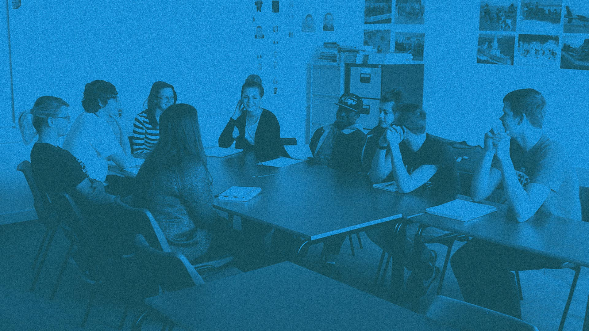

Focus group
I am 99 percent sure the design will change once we hold the focus group sessions. – Mayor Dorothy Larson
A focus group is qualitative research method that involves a group of people being queried about something. It focuses on the users’ opinions, beliefs or attitudes. The subject of a focus group can range from services, products, ideas, design - anything that involves stakeholders.
Questions are typically asked in a group setting and the researcher moderates as well as encourages the participants to engage in the discussion about the subject.
Focus group: Invited respondents are gathered for a talk about a given topic.
Focus groups are especially useful for observing the culture within a specific group, how a specific product is viewed in a group setting or for sparkling discussion.
Design focus groups often involve experiments, probes, games or others tools that help the participants express their attitudes, beliefs or opinions about the subject.
Focus groups in industry
Jobindex a danish web-based job database uses focus groups for multiple purposes. It’s used to gain insights for the sales department, but it is also used gain insights that can be used to target the communication to different industries. This information is both useful for the copywriters who write job postings, the marketing team and for the design team. It provides empathy for the different target groups who uses the site, which is a valuable tool for the whole company.
Focus groups at DMD
In the course “Concept Development with Industry” a group had a case to design a scheduling app for kids with autism and aspergers. Since the target user expectedly had very different mental models than the group of designers, they decided to use focus groups a way of understanding their needs and worldview.
They used a lot of probes to engage the participants to contribute with information, since they were introvert giving their diagnosis.